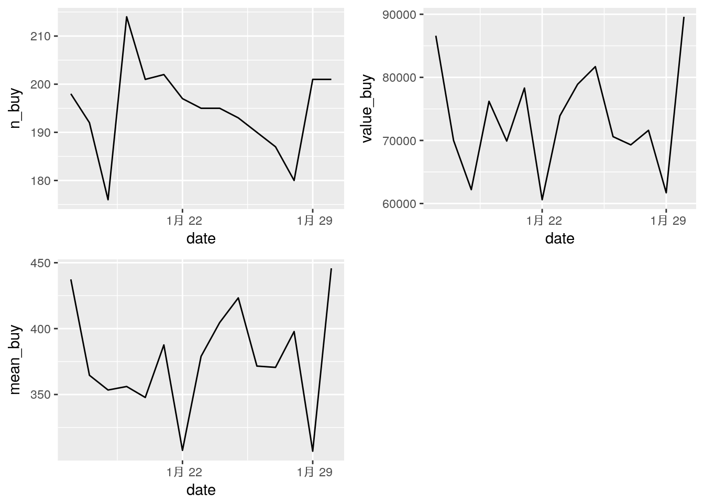
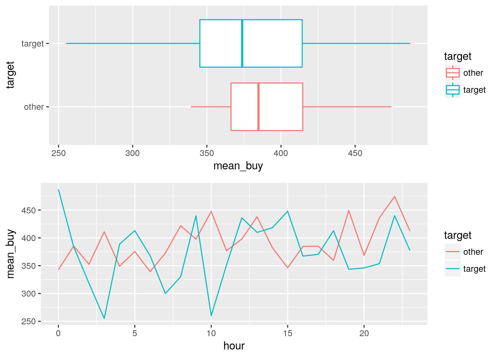

lesson: 5 特定の期間を利用した処理
ここでは、lesson2で準備したdf_logという仮想ログデータを用いて、一定期間での集計をまとめることを目指します。その中でlubridateのintervalオブジェクトと%within%演算子を説明します。
5.1 想定シナリオ
lesson2で作成したアイテム購入ログデータを元に、1/16から1/31までを曜日別集計を行います:
- 期間内購入件数
- 期間内売上合計
- 期間内購入単価平均
この集計により、その期間での売上を検証することができます。
また、特定の期間とそれ以外の期間での比較を行います:
- 購入件数の比較
- 売上合計の比較
これにより、期間別の比較をすることができます。
5.2 処理の実行
5.2.1 パッケージ読み込み
ここで使用するパッケージを読み込みます:
library(tidyverse)
library(lubridate)
library(gridExtra)5.2.2 データ読み込み
lesson2で作成したcsvを読み込みます。readr::read_csv()を使います:
df_log <- read_csv("df_log.csv")
#> Parsed with column specification:
#> cols(
#> stamp = col_datetime(format = ""),
#> id = col_integer(),
#> item = col_character(),
#> value = col_double()
#> )5.2.3 データハンドリングと可視化
5.2.3.1 特定期間を取り出す
特定の期間でどれだけ売上があったかを集計してデータセットにします。基本的な流れは以下のとおりです:
- 特定期間を表すietervalオブジェクトを作成
- 特定期間のデータを抽出
- 各種集計を実施
実際のRのコードは以下のようになります:
# intervalオブジェクトを生成
target_interval <- interval(
start = ymd("2018-1-16"),
end = ymd("2018-1-31")
)
# ターゲット期間のみを取り出して集計
# 指定が効いているのを確認するため日別集計
df_log_interval <- df_log %>%
filter(stamp %within% target_interval) %>%
mutate(date = date(stamp)) %>%
group_by(date) %>%
summarise(
n_buy = n(),
value_buy = sum(value),
mean_buy = mean(value)
)この処理を行ったデータセットは以下のようになります:
knitr::kable(head(df_log_interval, 10))| date | n_buy | value_buy | mean_buy |
|---|---|---|---|
| 2018-01-16 | 198 | 86600 | 437.3737 |
| 2018-01-17 | 192 | 70000 | 364.5833 |
| 2018-01-18 | 176 | 62200 | 353.4091 |
| 2018-01-19 | 214 | 76200 | 356.0748 |
| 2018-01-20 | 201 | 69900 | 347.7612 |
| 2018-01-21 | 202 | 78300 | 387.6238 |
| 2018-01-22 | 197 | 60600 | 307.6142 |
| 2018-01-23 | 195 | 73900 | 378.9744 |
| 2018-01-24 | 195 | 78900 | 404.6154 |
| 2018-01-25 | 193 | 81700 | 423.3161 |
このデータを元にggplot2で可視化してみます:
# 指定区間を取り出した範囲で可視化
p_int_date <- ggplot(df_log_interval)
p_int_date1 <- p_int_date +
geom_line(aes(x = date, y = n_buy))
p_int_date2 <- p_int_date +
geom_line(aes(x = date, y = value_buy))
p_int_date3 <- p_int_date +
geom_line(aes(x = date, y = mean_buy))
grid.arrange(p_int_date1, p_int_date2, p_int_date3, nrow = 2)
ついでに、指定期間との比較をやってみます
# 区間指定の応用。一定期間とそれ以外で検証
# filterではなくif_elseでmutateする
# 3つ以上ならcase_whenでパターンを準備すればOK
df_log_interval_comp <- df_log %>%
mutate(target = if_else(
stamp %within% target_interval, "target", "other"
)) %>%
mutate(hour = hour(stamp)) %>%
group_by(hour, target) %>%
summarise(
n_buy = n(),
value_buy = sum(value),
mean_buy = mean(value)
)この処理を行ったデータセットは以下のようになります:
knitr::kable(head(df_log_interval_comp, 10))| hour | target | n_buy | value_buy | mean_buy |
|---|---|---|---|---|
| 0 | other | 270 | 92500 | 342.5926 |
| 0 | target | 125 | 60900 | 487.2000 |
| 1 | other | 293 | 112900 | 385.3242 |
| 1 | target | 131 | 50300 | 383.9695 |
| 2 | other | 288 | 101500 | 352.4306 |
| 2 | target | 125 | 39800 | 318.4000 |
| 3 | other | 284 | 116700 | 410.9155 |
| 3 | target | 107 | 27300 | 255.1402 |
| 4 | other | 270 | 94200 | 348.8889 |
| 4 | target | 115 | 44700 | 388.6957 |
このデータを元にggplot2で可視化してみます:
p_int_comp_date <- ggplot(df_log_interval_comp)
p_int_comp_date1 <- p_int_comp_date +
geom_boxplot(aes(x = target, y = mean_buy, color = target)) +
coord_flip()
p_int_comp_date2 <- p_int_comp_date +
geom_line(aes(x = hour, y = mean_buy, color = target))
grid.arrange(p_int_comp_date1, p_int_comp_date2, nrow = 2)
5.2.4 解説
今回のポイントは、「この日時からこの日時まで」という特定の期間を示すintervalオブジェクトです。
lubridateパッケージには、独自でintervalクラスが実装されています:
# 使う日時データを準備
x1 <- ymd_hms("2018-02-23 17:50:00")
x2 <- ymd_hms("2018-02-25 17:50:00")
# intervalオブジェクトを作成
x_i <- interval(
start = x1,
end = x1 + days(1)
)
# そのまま出してみる
x_i
#> [1] 2018-02-23 17:50:00 UTC--2018-02-24 17:50:00 UTC
# 開始日時を取得
int_start(x_i)
#> [1] "2018-02-23 17:50:00 UTC"
# 終了日時を取得
int_end(x_i)
#> [1] "2018-02-24 17:50:00 UTC"
# 時間の幅を取得
int_length(x_i)
#> [1] 86400
# interval作成用の%--%演算子
x1 %--% x2
#> [1] 2018-02-23 17:50:00 UTC--2018-02-25 17:50:00 UTCintervalオブジェクトは時間的な幅を秒単位で保持し、それに属性(attribute)で開始日時とタイムゾーン、そしてclass情報を付与しています:
# 中身を強制的に出力
# 1日は86400秒
cat(x_i)
#> 86400
# 属性を出力してみる
attributes(x_i)
#> $start
#> [1] "2018-02-23 17:50:00 UTC"
#>
#> $tzone
#> [1] "UTC"
#>
#> $class
#> [1] "Interval"
#> attr(,"package")
#> [1] "lubridate"このあたりが理解できていれば、lesson2-4の内容を応用していろいろいじれることはわかるかと思います。このintervalオブジェクトに関する便利な関数がlubridateパッケージに準備してあります:
# intervalを準備
x_i1 <- interval(ymd("2018-01-01"), ymd("2018-01-31"))
x_i2 <- interval(ymd("2018-01-16"), ymd("2018-02-16"))
x_i3 <- interval(ymd("2018-02-01"), ymd("2018-02-28"))
# intervalをずらす
# 第二引数には時間的な幅(duration(), days()など)
int_shift(x_i1, days(5))
#> [1] 2018-01-06 UTC--2018-02-05 UTC
# 開始と終了を反転
x_i1_flip <- int_flip(x_i1)
x_i1_flip
#> [1] 2018-01-31 UTC--2018-01-01 UTC
# 開始と終了を整える(順番をきれいにする)
int_standardize(x_i1_flip)
#> [1] 2018-01-01 UTC--2018-01-31 UTC
# 2つの区間が重なっているかどう(オーバーラップ)か判定
# これはオーバーラップしているのでTRUE
int_overlaps(x_i1, x_i2)
#> [1] TRUE
# これはオーバーラップしてないのでFALSE
int_overlaps(x_i1, x_i3)
#> [1] FALSE
# 2つのintervalで、開始and/or終了が同じかどうか(align)判定
# 説明用に新たにintervalを準備
x_i4 <- interval(ymd("2018-01-01"), ymd("2018-02-16"))
# x_i4の開始はx_i1の開始と揃っているので、これはTRUE
int_aligns(x_i4, x_i1)
#> [1] TRUE
# x_i4の終了はx_i2の終了と揃っているので、これもTRUE
int_aligns(x_i4, x_i2)
#> [1] TRUE
# x_i4はx_i3の開始とも終了とも揃っていないので、これはFALSE
int_aligns(x_i4, x_i3)
#> [1] FALSE
# 日時ベクトルの要素で、その差分を利用してintervalベクトルを作成
# 説明用に日付のベクトルを生成
dates <- now() + days(1:3)
dates
#> [1] "2018-02-26 12:51:32 JST" "2018-02-27 12:51:32 JST"
#> [3] "2018-02-28 12:51:32 JST"
# 差分でintervalベクトルを生成
# この場合、3つの日時から区間をつくるので長さが2になる
int_diff(dates)
#> [1] 2018-02-26 12:51:32 JST--2018-02-27 12:51:32 JST
#> [2] 2018-02-27 12:51:32 JST--2018-02-28 12:51:32 JSTまた、「あるinterval/日時が、ある区間に含まれるかどうか」を判定する演算子として、lubridateには%within%が準備してあります。
# 説明用にintervalを準備
x_i1 <- interval(ymd("2018-01-01"), ymd("2018-01-31"))
x_i2 <- interval(ymd("2018-01-16"), ymd("2018-01-31"))
x_i3 <- interval(ymd("2018-01-16"), ymd("2018-02-16"))
# %within%演算子のテスト
# これは含まれるのでTRUE
ymd("2018-01-10") %within% x_i1
#> [1] TRUE
# これは含まれないのでFALSE
ymd("2018-02-10") %within% x_i1
#> [1] FALSE
# intervalでの比較
# これは含まれるのでTRUE
x_i2 %within% x_i1
#> [1] TRUE
# これは(オーバーラップしてるけけど)内包しているわけではないのでFALSE
x_i3 %within% x_i1
#> [1] FALSE
# この演算子は「左が右に含まれるかどうか」を判定
# なので、これはFALSE
x_i1 %within% x_i2
#> [1] FALSE演算子の右にはintervalオブジェクトしか使えませんので注意してください。
5.3 参照
- Utilities for creation and manipulation of Interval objects
intervalオブジェクトを作成・操作する関数の説明
- Interval class
intervalクラスの説明
- Tests whether a date or interval falls within an interval
%within%演算子の説明